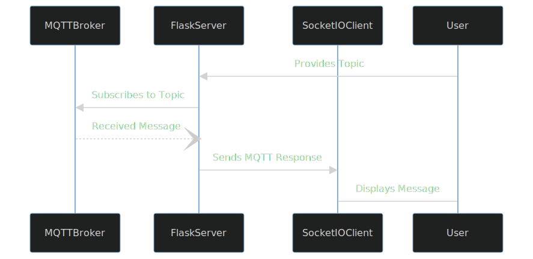
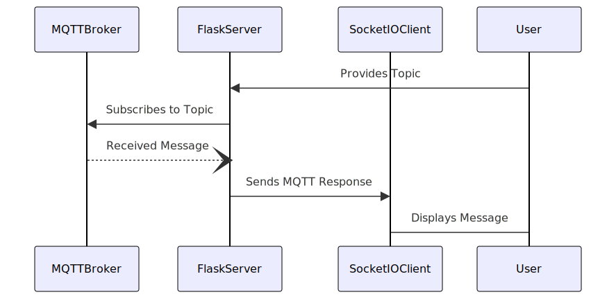

Notes on Flask, WTForms, Protocol Buffers and more…#
These notes are a part of Flask based Web Server I build for TMCVP Protobuf Encoded Communication Testing Server.
Protocol Buffers#
Compiling large number of .proto files.#
Suppose you have a folder with ~100 .proto files. You wont do protoc --python_out=compile_pb/ myProtoFile.proto for each one of them.
Instead a simple shell script makes job easier.
31for file in *.proto; do
32 echo "Compiling $file"
33 protoc --python_out=pyi_out:$1 $file
The .pyi files to help in IDEs and code editors like VsCode or PyCharm.
Looping over all fields in protobuf messages.#
The python protobuf provides an api ListField, however does not lists empty fields.
This causes fields specifically set to values like 0 to be skipped.
Another way is to use message.DESCRIPTOR.fields which will list all the field descriptors for that message type. This includes empty ones.
This creates a list of names of all fields in the message, where field is of type google.protobuf.descriptor.FieldDescriptor
[f.name for f in a.DESCRIPTOR.fields]
See protoserver.utils.MessageToTable() for entire code, but here is the gist
250gen = message.ListFields()
251## To loop over fields which are not shown in ListFields
252if show_empty:
253 gen = ((f, getattr(message, f.name)) for f in message.DESCRIPTOR.fields)
254
255for field_descriptor, value in gen:
256 ...
Getting string name of Enum in protobuf message#
Suppose we have an enum class ExampleEnum we can get name for corresponding int type as ExampleEnum.Name(1).
In case of enum field inside a message we can use field.enum_type.values_by_number
261for field_descriptor, value in message.ListFields():
262 field_descriptor.enum_type.values_by_number[int(sub_message)].name
WTForms#
I have used this for creating dynamic flask forms. See protoserver.app.generateDynamicForm() for more deatils.
Basic Stuff#
56class MyFLaskForm(FlaskForm):
57 intField = IntegerField("Integer Field", render_kw={"class":"form-control"})
58 stringField = StringField("String Field", render_kw={"placeholder": "Enter text"})
59 selectField = SelectField("Select Field", choices=[(e.number, e.name) for e in enum_type.values] render_kw={"class":"form-select"})
Creating Dynamic Flask Forms based on Protobuf Payload#
201def generateDynamicForm(message):
202 class DynamicForm(FlaskForm):
203 pass
204
205 for field in message.DESCRIPTOR.fields:
206 # {ENUM: "SelectField", INTEGER: "IntegerField", STRING: "StringField"}[field.type]
207 setattr(DynamicForm, field.name, {{TYPE}}Field(field.name, **kwrgs, render_kw=...))
208
209 if field.label == field.LABEL_REPEATED:
210 nested_form = FieldList(FormField({{TYPE}}Field(field.name), **kwargs), min_entries=..., max_entries=... **kwargs)
211 setattr(DynamicForm, field.name, nested_form)
212
213 if field.type == TYPE_MESSAGE:
214 # Recursion
215 setattr(DynamicForm, field.name, generateDynamicForm(message[field.name]))
216
217 return DynamicForm
This enabled me to create form based fields in protobuf payload.
Flask#
Best place to learn#
The best place to start in my opinion is CS50x’s Web Track (This is from CS50 2020, I don’t know about current versions)
Another good tutorial is the Flask’s own docs.
There may be some youtube resources, but I am not fond of video lectures. I’d rather grind my way through the docs. RTFM baby.
Ecosystem#
Another wonderful thing about Flask is the eco-sysmtem around it.
For WTForms: we have Flask-WTF
For MQTT: we have Flask-MQTT
For SocketIO: we have Flask-SocketIO
And I never saw this one coming, there is literally Flask-Rich for Rich based text formatting and logging in Flask.
This one’s popular: Flask-SQLAlchemy
Adding attributes to variables in render_template#
So adding CSS class is as simple as: {{ field(class="form-control") }}
You can also add custom JavaScript function like this:
74<label for="{{ form.numEntries.id }}" class="form-label">{{ form.numEntries.label }}</label>
75{{
76 form.numEntries(
77 onfocus="document.getElementById('numEntriesInfo').style.display='block'",
78 onblur="document.getElementById('numEntriesInfo').style.display='none'"
79 )
80
81}}
82<label id="numEntriesInfo" class="text-muted small" style="display: none;">This field will not be included in the form.</label>
Using render_template outside of registered URL Route#
This is just to solve an error which occured in :func:decode_response <protoserver.app.decode_response>.
To solve this I did:
@mqtt.on_message()
def decode_response():
# ...
with app.app_context():
response_table = render_template('response_table.html', **kwargs)
# ...
SocketIO#
To send message from backend to frontend#
This is what ChatGPT said when I asked about how do I pass MQTT response from background thread to front html.
If you’re receiving MQTT responses in another thread in your Flask application and you want to update the HTML template with this data, you need a mechanism to communicate between threads. Flask-SocketIO is one way to achieve real-time communication between the server and the client using WebSockets.
So this is what I needed SocketIO for
441socketio.emit('mqtt_message',
442 {
443 'topic': message.topic,
444 'message': mqtt_response,
445 'messageHex': message.payload.hex(" ").upper()
446 })
194const socket = io.connect('http://' + document.domain + ':' + location.port);
195socket.on('mqtt_message', function(data) {
196 showToast({
197 header: 'MQTT Response received on',
198 data: data.topic
199 });
200 $('#responseHex').html(data.messageHex);
201 $('#response').html(data.message);
202});